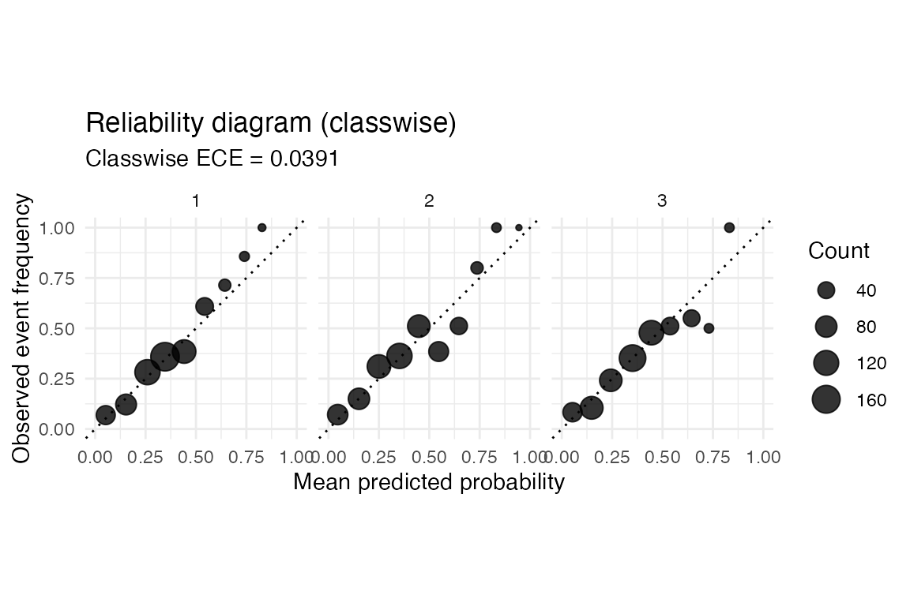

From two classes to several
The binary calibrators in probcal take a vector of
scores or probabilities. The multiclass calibrators take a matrix with
one row per observation and one column per class. The same functions
serve both settings: a vector input is treated as binary, and a matrix
input is treated as multiclass. Labels are a factor or a vector of
integer class codes in 1:K, where K is the
number of columns.
A multiclass model usually returns either a matrix of logits or a matrix of softmax probabilities. Temperature scaling and vector scaling work on logits. Dirichlet calibration works on probability matrices. The one-vs-rest wrapper uses the input scale required by its binary base method: scores or probabilities for Platt scaling, probabilities for beta calibration, isotonic regression, and histogram binning, and logits for temperature scaling.
Simulating an overconfident classifier
We simulate true class probabilities for three classes, draw labels from them, and then sharpen the probabilities to mimic an overconfident model. The calibration split fits the calibrator and the test split evaluates it.
set.seed(2024)
n <- 1200
k <- 3
true_prob <- matrix(stats::runif(n * k), ncol = k)
true_prob <- true_prob / rowSums(true_prob)
labels <- apply(true_prob, 1, function(row) sample.int(k, 1, prob = row))
# An overconfident model: push probabilities toward 0 and 1.
sharpen <- function(p, power = 2.5) {
q <- p^power
q / rowSums(q)
}
raw_prob <- sharpen(true_prob)
raw_logits <- log(pmax(raw_prob, 1e-12))
split <- sample(rep(c("calibration", "test"), each = n / 2))
cal <- split == "calibration"
test <- split == "test"Measuring multiclass calibration
The calibration metrics accept the probability matrix and a
type argument. The classwise form averages the binary
calibration error over the one-vs-rest columns. The confidence form
looks only at the top-label probability and whether the predicted class
is correct.
Temperature scaling on logits
Temperature scaling estimates a single positive scalar. Dividing every logit by the same value does not change the predicted class, so temperature scaling only sharpens or softens the probabilities.
temp_fit <- cal_temperature(raw_logits[cal, ], labels[cal])
temp_fit
#>
#> ── ⚖ probcal calibrator ────────────────────────────────────────────────────────
#> Method: multiclass temperature scaling
#> Observations: 600
#> Input: logits (matrix)
#> Classes: 3
temp_pred <- predict(temp_fit, raw_logits[test, ])
ece(temp_pred, labels[test], type = "classwise")
#> [1] 0.03874575Dirichlet calibration on probabilities
Dirichlet calibration is the multiclass generalization of beta
calibration. It fits a linear map on the log-probabilities, regularized
by an off-diagonal and intercept penalty whose strength is chosen by
cross-validation when lambda is left at its default.
dir_fit <- cal_dirichlet(raw_prob[cal, ], labels[cal])
dir_pred <- predict(dir_fit, raw_prob[test, ])
ece(dir_pred, labels[test], type = "classwise")
#> [1] 0.03913495One-vs-rest calibration
The one-vs-rest wrapper lifts any binary calibrator to several classes. It fits a binary calibrator that separates each class from the rest, applies them column by column, and renormalizes each row to sum to one.
Comparing the calibrators
data.frame(
method = c("raw", "temperature", "dirichlet", "one-vs-rest"),
classwise_ece = c(
ece(raw_prob[test, ], labels[test], type = "classwise"),
ece(temp_pred, labels[test], type = "classwise"),
ece(dir_pred, labels[test], type = "classwise"),
ece(ovr_pred, labels[test], type = "classwise")
)
)
#> method classwise_ece
#> 1 raw 0.12149600
#> 2 temperature 0.03874575
#> 3 dirichlet 0.03913495
#> 4 one-vs-rest 0.04916152Reliability diagram
For a probability matrix the reliability diagram draws one panel per class in the classwise layout, or a single panel of top-label confidence in the confidence layout.
reliability_diagram(dir_pred, labels[test], bins = 10, type = "classwise")
Out-of-fold calibration
When calibration data are scarce, cal_cv() fits the
calibrator with out-of-fold predictions. It accepts a matrix input and
the multiclass methods "temperature",
"vector", "dirichlet", and
"ovr".